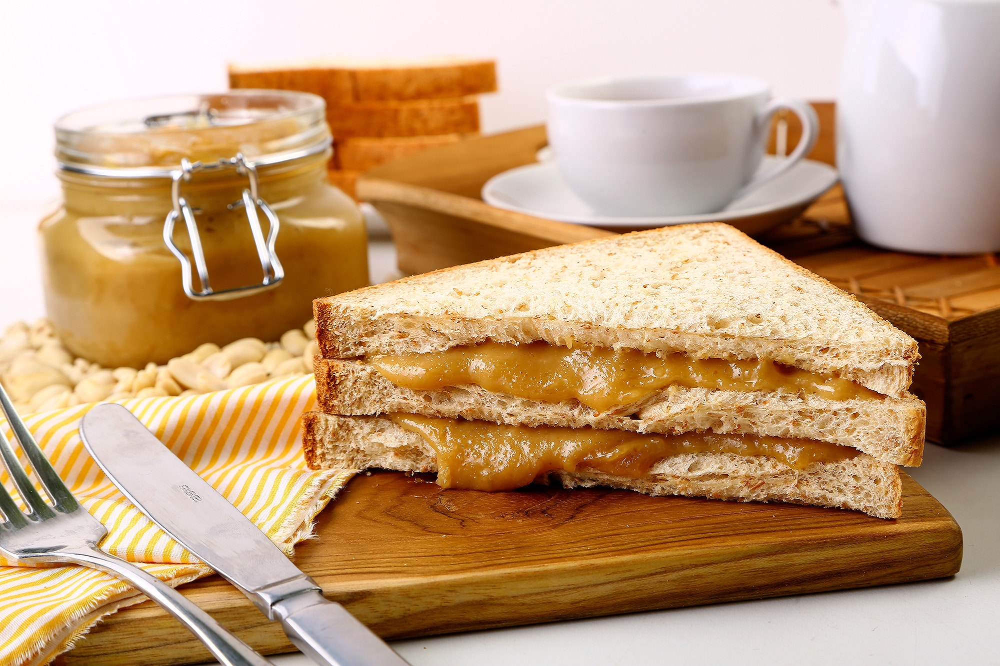

Peanut Butter Sandwich

Description
This is the classic sandwich that people all over the world seem incapable of not fucking up.
Seriously - You try finding a picture of a plain peanut butter sandwich online and
you'll see a bunch of disgusting 'takes' on the humble PBS.
Who do these people think they are putting syrup with peanut butter? Or mayonnaise. Monsters.
Ingredients
- White Bread 2 portions
- Peanut Butter
- Nothing Else
- No
- I swear to god
Instructions
- Take two portions of bread from its home.
- Open your jar of peanut butter. It isn't peanut paste.
- Ruminate on how Americans always name things in a weird way.
- Get a knife or a trowel.
- Using the knife, take a sensible amount of peanut butter from the jar.
- Spread the peanut butter on one of the portions of white bread.
- Think about how you'd like to add another ingredient like banana.
- Perhaps some honey too?
- Grab your mobile phone.
- Call your local hospital and make a booking for a full lobotomy.
- You couldn't even just make a peanut butter sandwich. You don't need a brain.